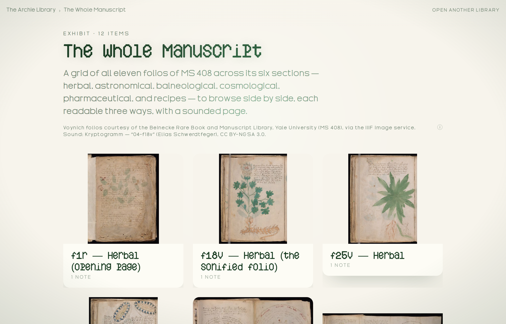

Archie Learn · Step 5 of 7 · Lead the reader
Lead the reader through it
By default visitors browse your media freely. Write one Section and the front door becomes a guided walk-through — no setting, just a consequence. Add one and watch:


Notice · You never picked a layout — writing a narrative (or not) chose it for you. model.ts — sections.length > 0 ? 'narrative' : 'grid'